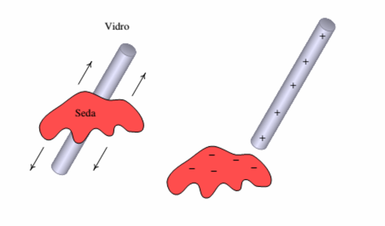
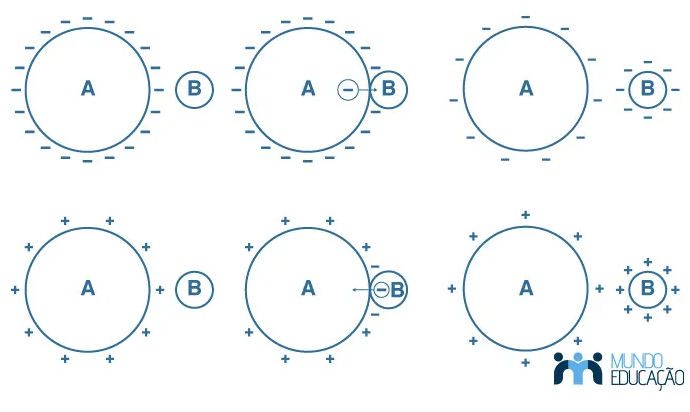
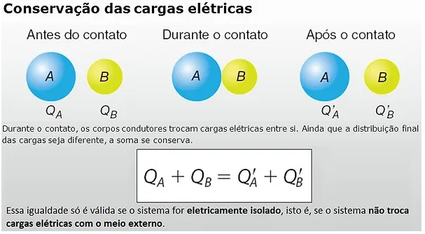
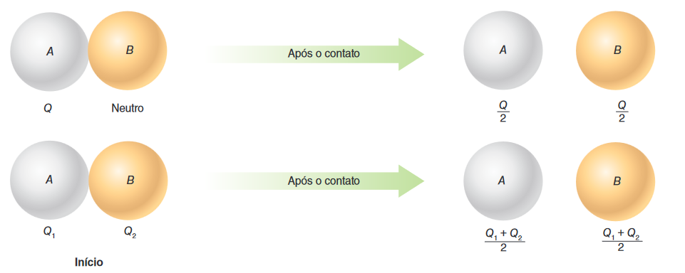

Processos de Eletrização
Os materiais podem ser classificados como condutores, quando as cargas não encontram grande dificuldades no deslocamento, ou como isolantes ou dielétricos, em caso contrário.
Materiais isolantes ou dielétricos: são materiais cujos elétrons estão fortemente ligados ao núcleo, e por isso encontram grande dificuldade de movimentação. Como exemplo temos: a madeira, o ar atmosférico, o vidro, a borracha e etc.
Materiais condutores: são materiais cujos elétrons mais afastados do núcleo possuem grande facilidade de se movimentar. Como exemplo podemos citar: o corpo humano, os metais em sua grande maioria, o solo e etc.
Processos de Eletrização - Atrito
A eletrização por atrito ocorre quando dois objetos isolantes de materiais distintos, inicialmente neutros, são friccionados sendo transferidos elétrons de um dos corpos para o outro. Deste modo, um corpo fica com excesso de elétrons(eletrizado negativamente) e o outro fica com falta de elétrons (eletrizado positivamente). Neste processo os corpos ficam carregados com cargas de mesmo módulo, porém de sinais contrários.

A série triboelétrica determina a conversão de sinais entre os objetos atritados. A confecção dessa lista obedece a um critério bem definido: um elemento da relação, ao ser atritado com outro que o segue, fica eletrizado com carga elétrica positiva, e ao ser atritado com o que precede, fica eletrizado com carga elétrica negativa.
Como exemplo pegando a lã e atritando com couro, a lã ficará eletrizada negativamente e o couro ficará eletrizado positivamente.
Processos de Eletrização - Contato
A eletrização por contato ocorre quando um condutor neutro entra em contato com outro condutor eletrizado. Nesse processo o corpo neutro fica eletrizado com carga de mesmo sinal daquele que estava previamente eletrizado. Considere o exemplo da figura abaixo:
• No primeiro caso temos dois condutores A e B, estando o primeiro eletrizado negativamente e o segundo neutro. Ao efetuar o contato entre eles parte dos eletróns em excesso de A é transferido para B e após ser separadas ambos ficam eletrizadas negativamente.
• No segundo caso temos dois condutores A e B, estando o primeiro eletrizado positivamente e o segundo neutro. Ao efetuar o contato entre eles parte dos eletróns de B é transferido para A, isto ocorre pois A está com falta de elétrons. Após ser separados ambos ficam eletrizadas negativamente.
Princípio da Conservação das Cargas
O princípio da conservação das cargas afirma que:
“Em um sistema isolado a soma algébrica das quantidades de carga elétrica é constante, ou seja, a soma das cargas elétricas em um estado inicial é igual a soma das cargas elétricas no estado final.”
Na eletrização por contato, as cargas elétricas adquiridas pelos corpos (supostos condutores) dependem das dimensões desses corpos. Vamos considerar que eles tenham as mesmas dimensões e a mesma forma, sendo, porexemplo, esferas de mesmo raio. Nesse caso, apresentarão cargas elétricas iguais após o contato.
A figura seguinte ilustra dois corpos idênticos, A e B, em duas situações: na primeira, o corpo A tem inicialmente carga elétrica Q, enquanto o corpo B está neutro; na segunda, os corpos A e B têm cargas elétricas iniciais diferente de zero.

Observe que o valor da carga elétrica total inicial é dividido igualmente para todos os condutores que realizaram o contato